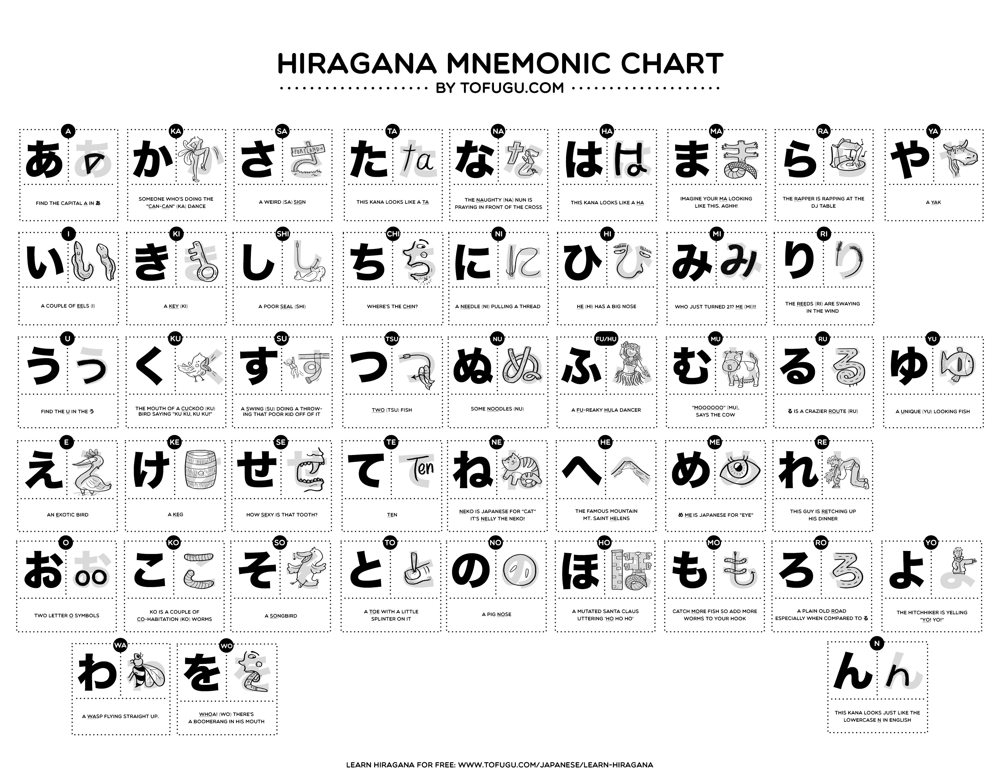

https://www.wasabi-jpn.com/how-to-learn-japanese/special-course-how-to-learn-japanese-for-beginners/#https://my.wasabi-jpn.com/curriculum/self-learning-japanese/
https://www.fluentu.com/blog/japanese/japanese-online-course/
from tofugu.com